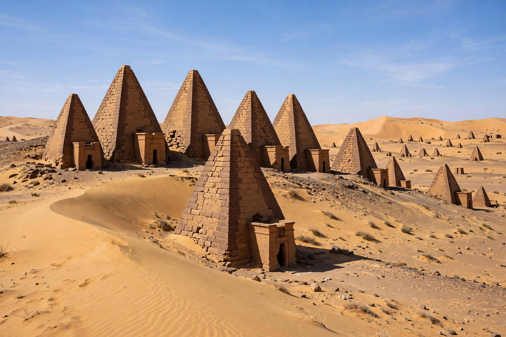

| Pyramids of Meroë | |
|---|---|
 | |
| Location | Shendi region, River Nile State, Sudan |
| Built | c. 720 BCE – 350 CE |
| Number | More than 200 pyramids (255 in all Sudan) |
| Culture | Kingdom of Kush (Meroitic period) |
| UNESCO | World Heritage Site (2011) |
The Pyramids of Meroë are a group of more than 200 ancient pyramids built by the rulers of the Kingdom of Kush in the cemeteries of Meroë, in present-day Sudan, about 230 km northeast of Khartoum. Although much smaller than the famous Egyptian pyramids of Giza, they are far more numerous — Sudan has more pyramids than Egypt (about 255 in total) — and they testify to a Nubian civilisation that ruled Egypt itself as the 25th Dynasty (the "Black Pharaohs") and flourished for over a thousand years.
The Meroitic pyramids are typically 6 to 30 metres high, built of sandstone blocks with steep sides (about 70 degrees), rising from small foundations. Each stood before a mortuary chapel on its eastern face, decorated with reliefs of the king or queen offering to the gods; beneath lay burial chambers cut into the rock, usually in three rooms, reached by a stairway. The royal cemeteries are divided into the South Cemetery (Begrawiya Beg S), the older burial ground, and the North Cemetery (Beg N), in use from about 300 BCE, with the West Cemetery (Beg W) for nobles and officials. Queens (the powerful kandakes, or Candaces) were buried with honours equal to kings.
Meroë became the southern capital of Kush after the court moved from Napata (whose pyramids stand at el-Kurru and Nuri) around the 6th century BCE. The kingdom declined in the 4th century CE and Meroë was abandoned by about 350 CE, possibly after an invasion from Aksum. In 1834 the Italian treasure hunter Giuseppe Ferlini demolished the tops of some forty pyramids searching for gold, destroying among others the tomb pyramid of Queen Amanishakhete — whose treasure he did find and which is now in Berlin and Munich. Systematic excavation began with George Reisner (1920s); restoration work, including the reassembly of several pyramid tops, was carried out by Sudanese and German teams in recent decades. The site was inscribed as a UNESCO World Heritage Site in 2011 as part of the "Island of Meroe" listing.
See also: Meroë · Kingdom of Kush · Napata · Piye